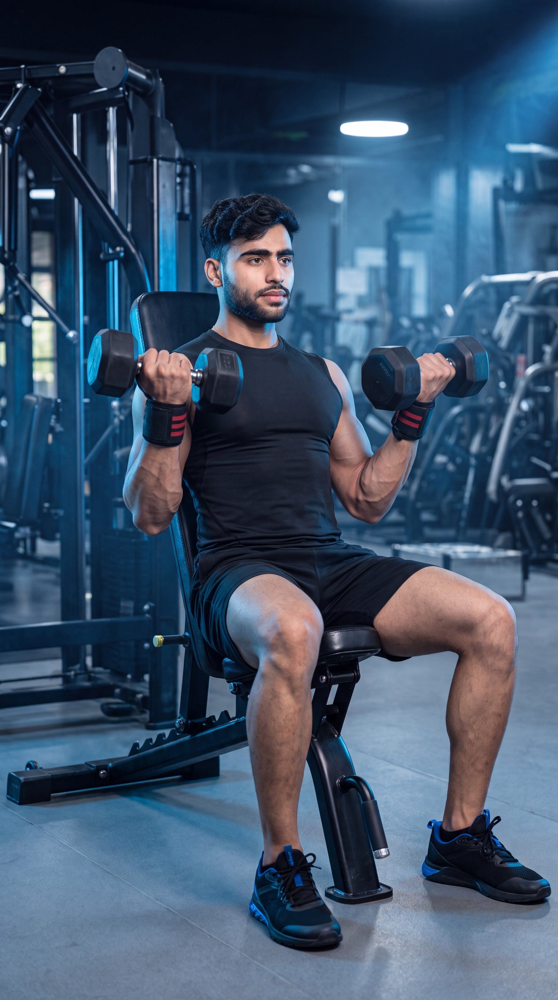

Primary Muscle
Biceps Brachii (Long Head)
Maximize Biceps Stretch, Target the Long Head & Build Taller Biceps Peaks
The Incline Dumbbell Curl is one of the most effective isolation exercises for maximizing the stretch of the biceps and emphasizing the long head of the biceps brachii. Performed on an incline bench, this exercise keeps your arms behind your torso, increasing muscle tension throughout the movement. It also recruits the brachialis, brachioradialis, and forearm muscles, making it an excellent choice for building bigger, stronger, and more defined arms.

Biceps Brachii (Long Head)
Incline Bench & Dumbbells
Intermediate
Isolation
Discover which muscles are primarily responsible for the Incline Dumbbell Curl and which supporting muscles assist in elbow flexion, forearm stability, grip strength, and shoulder positioning to maximize the stretch and development of the biceps for bigger, stronger, and more defined arms.
Front Upper Arms
Upper Arm Flexor
Forearm
Grip Muscles
Discover how the Incline Dumbbell Curl helps maximize the stretch of the biceps, target the long head, build taller biceps peaks, improve muscle symmetry, and increase arm size through a greater range of motion.
Sitting on an incline bench places your arms behind your body, creating a deeper stretch in the biceps and increasing muscle fiber recruitment throughout the movement.
The incline position emphasizes the long head of the biceps, helping create taller biceps peaks and improving overall upper-arm aesthetics.
The incline bench allows your arms to travel through a greater range of motion, keeping the biceps under tension for longer and promoting superior muscle growth.
Training each arm independently helps correct strength imbalances while promoting balanced biceps development and better movement control.
The strict seated position minimizes momentum, making it easier to focus on squeezing the biceps throughout every repetition.
Combining a deep stretch, long-head emphasis, and progressive overload makes the Incline Dumbbell Curl one of the most effective exercises for increasing biceps size, definition, and overall arm development.
Follow these step-by-step instructions to perform the Incline Dumbbell Curl with proper form, controlled movement, and a full range of motion to maximize the stretch of the biceps, target the long head, and build bigger, stronger, and more defined arms.
Adjust an incline bench to approximately 45–60 degrees. Sit back firmly with your shoulders against the bench and allow your arms to hang naturally while holding a dumbbell in each hand using an underhand grip.
Keep your chest up and shoulders pulled back throughout the exercise.
Allow your arms to fully extend beneath your shoulders while keeping your elbows close to your body. Maintain straight wrists and avoid swinging the dumbbells.
Feel the deep stretch in your biceps before beginning each repetition.
Curl both dumbbells toward your shoulders by flexing your elbows while keeping your upper arms stationary. Focus on contracting your biceps rather than lifting with your shoulders.
Keep your elbows behind your torso throughout the movement to maximize long-head activation.
Pause briefly when the dumbbells reach the top of the movement and squeeze your biceps as hard as possible before lowering the weights.
Hold the contraction for one second to improve your mind-muscle connection.
Slowly lower the dumbbells back to the starting position while maintaining full control. Allow your biceps to stretch completely before beginning the next repetition.
Take two to three seconds during the lowering phase to maximize time under tension and stimulate greater muscle growth.
Avoid these common technique mistakes to maximize long-head biceps activation, maintain a full range of motion, preserve the deep muscle stretch, and perform the Incline Dumbbell Curl safely and effectively.
Allowing your elbows to move in front of your torso reduces the stretch on the long head of the biceps and turns the exercise into a standard curl.
Keep your elbows behind your torso and fixed in position throughout every repetition.
Using body momentum to lift the weights reduces biceps activation and shifts the workload to the shoulders and lower back.
Select a lighter weight and perform each repetition slowly while keeping your back firmly against the bench.
Stopping short of full extension prevents the biceps from experiencing the deep stretch that makes this exercise so effective.
Lower the dumbbells under control until your arms are nearly fully extended, then curl through the complete range of motion.
Dropping the dumbbells too quickly reduces time under tension and minimizes the stretch that stimulates muscle growth.
Lower the dumbbells over two to three seconds while maintaining complete control and continuous tension on the biceps.
Apply these practical coaching cues to improve your Incline Dumbbell Curl technique, maximize long-head biceps activation, maintain a deep muscle stretch, and perform every repetition with strict control and precision.
Maintain your elbows slightly behind your torso throughout the movement. This position maximizes the stretch on the long head of the biceps and keeps tension where it belongs.
Keep your upper arms still and let only your forearms move during every repetition.
Allow your arms to reach a full stretch at the bottom before beginning the next repetition. This increases muscle fiber recruitment and promotes greater biceps growth.
Don't rush the bottom position—feel the stretch before curling upward.
Pause briefly at the top of each repetition and contract your biceps as hard as possible before lowering the dumbbells. This improves peak contraction and your mind-muscle connection.
Focus on squeezing the biceps—not simply lifting the weight.
Lower the dumbbells slowly while maintaining constant tension on the biceps. A controlled eccentric phase increases time under tension and stimulates greater muscle growth.
Take two to three seconds to lower the dumbbells and avoid letting gravity do the work.
Progress from learning the proper Incline Dumbbell Curl technique to maximizing long-head biceps activation, increasing arm strength, and advancing to more challenging biceps exercises for complete arm development.
Begin with light dumbbells and learn to keep your upper arms behind your torso while curling through a full range of motion without using momentum.
Proper bench angle, deep biceps stretch, elbow position, and strict movement.
Perform slow, controlled repetitions while allowing a full stretch at the bottom and squeezing your biceps at the top to improve the mind-muscle connection.
Long-head activation, controlled tempo, peak contraction, and muscle awareness.
Progressively increase the dumbbell weight while maintaining perfect form, a complete range of motion, and a controlled lowering phase to maximize muscle growth.
Progressive overload, eccentric control, hypertrophy, and consistent technique.
After mastering the Incline Dumbbell Curl, incorporate advanced movements such as Concentration Curls, Cable Curls, Preacher Curls, Zottman Curls, or Heavy Barbell Curls to continue building bigger, stronger, and more defined biceps.
Advanced hypertrophy, complete biceps development, strength progression, and long-term arm growth.
Find clear answers to common questions about the Incline Dumbbell Curl, including proper technique, muscles worked, bench angle, training frequency, and progression for building bigger, stronger, and more defined biceps.
The Incline Dumbbell Curl primarily targets the biceps brachii, with extra emphasis on the long head because your arms remain behind your torso. It also recruits the brachialis, brachioradialis, and forearm muscles for elbow flexion and stability.
Sitting on an incline bench places your biceps in a stretched position at the start of each repetition, increasing muscle tension and making it one of the best exercises for developing the long head of the biceps.
A bench angle of approximately 45–60 degrees is ideal for most lifters. This position provides a deep stretch while allowing you to maintain good shoulder position and strict curling technique.
Yes. Beginners should start with light dumbbells, maintain proper posture against the bench, avoid swinging, and prioritize a full range of motion before increasing the weight.
Most people benefit from performing Incline Dumbbell Curls one to two times per week as part of an arm or upper-body workout while allowing adequate recovery between training sessions.
For muscle growth, perform 2–4 working sets of 8–12 controlled repetitions. Focus on achieving a full stretch at the bottom, squeezing the biceps at the top, and applying progressive overload while maintaining strict form.
Explore other biceps exercises that complement the Incline Dumbbell Curl and help you build bigger biceps, improve arm strength, increase muscle definition, and achieve complete arm development.
Continue building bigger, stronger, and more defined arms with step-by-step exercise guides covering proper technique, muscles worked, common mistakes, expert coaching tips, and progressive training strategies.